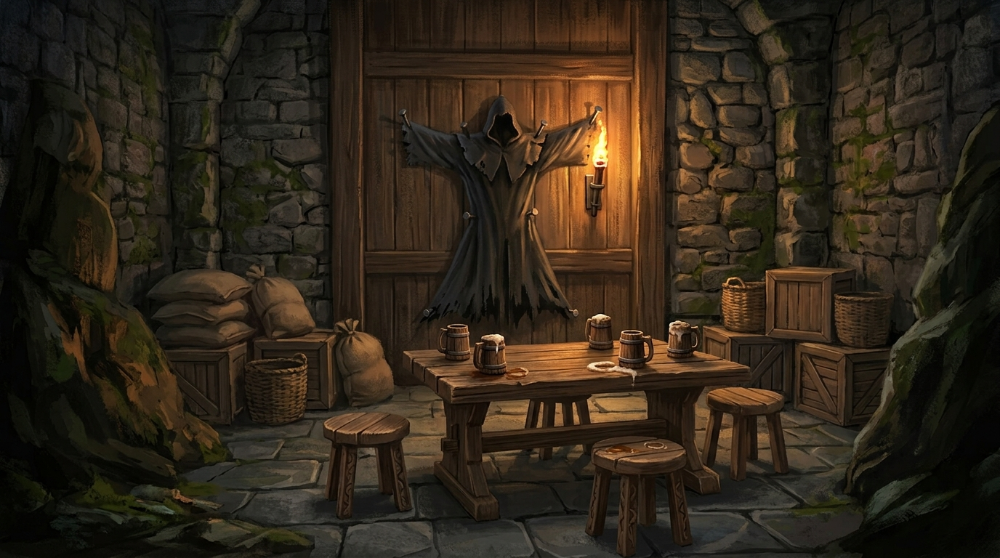
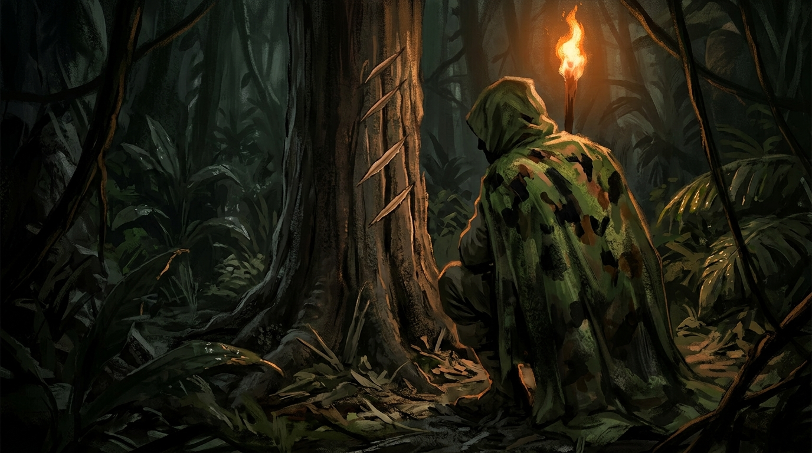
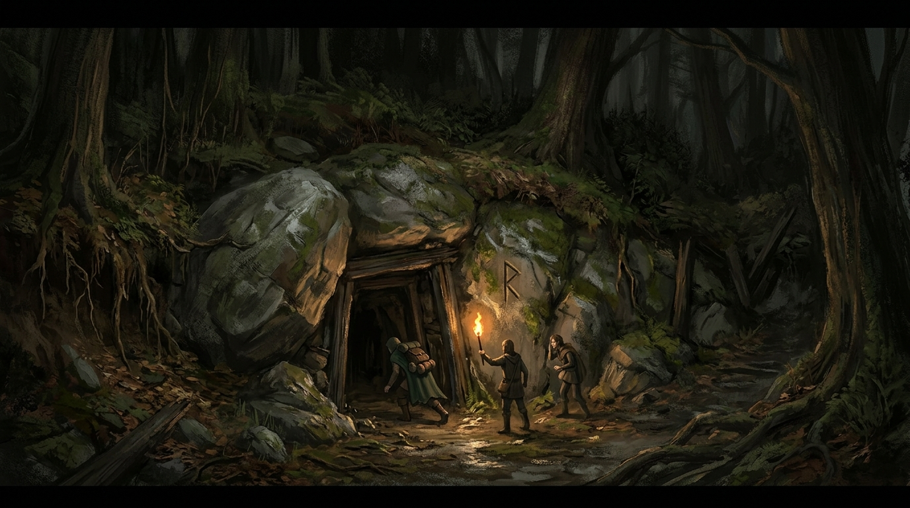
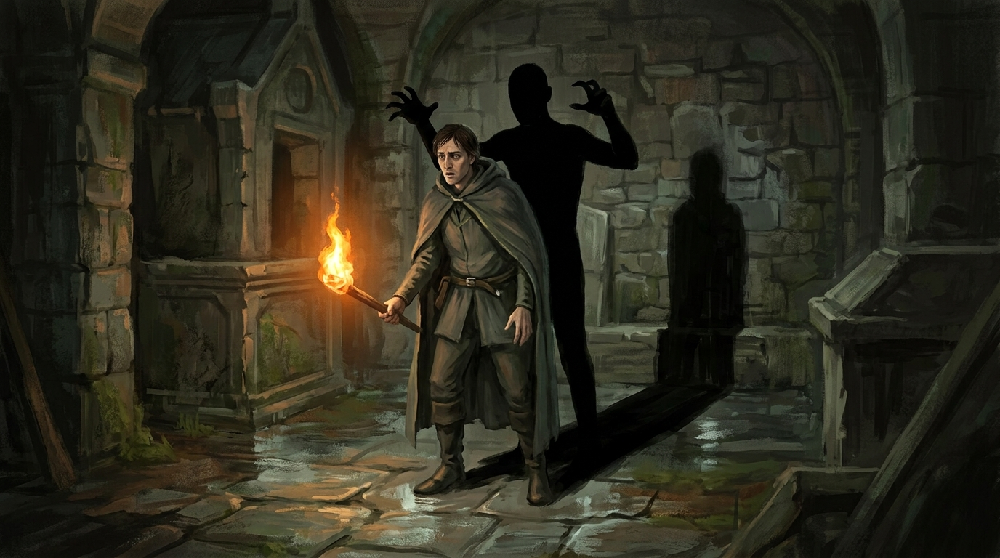
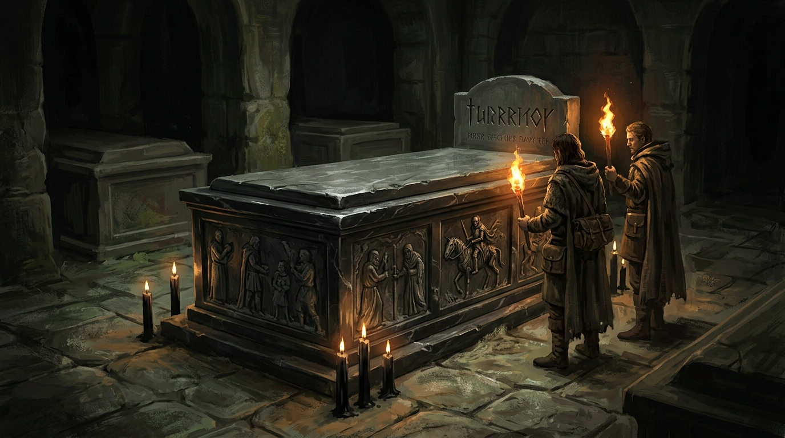

Em Sembra ninguém pagava com moeda. Havia umas quarenta pessoas circulando pelo vilarejo naquela manhã, cinco delas armadas, e o que trocava de mão era faca pequena, corda, píton, pele, saco de dormir, ponta de flecha. Metal cunhado não valia nada porque não havia reino nenhum mandando na região, e não havia reino porque a quarta era tinha começado havia uns cinquenta anos e trazido o caos junto. Velho era raridade. Quem tinha ouro guardava para pagar socorro.
Um dos bárbaros, Raul, encomendou um machado novo a um dos aventureiros e pagou adiantado, ali mesmo, com quatro orelhas, um dedo e um dente. Uma das orelhas era de elfo. Foi o que ele conseguiu matar naquela semana, e naquele mundo era pagamento.
Naquela manhã ainda não havia grupo nenhum. Havia gente solta pelo vilarejo, cada um cuidando do que tinha vindo cuidar, e havia Dariel, que era o assunto da vila.
Dias antes ele tinha voltado da floresta a noroeste com o manto de um cultista, e Vitória, a mulher do balcão da hospedaria, pregou a veste aberta no fundo do armazém dela, esticada como bicho pregado em porta de celeiro, para que ficasse claro de que lado a casa estava. Contada na vila, a história é curta e é boa: o bravo Dariel matou um dos cultistas e trouxe a roupa dele.
Contada por ele, numa mesa de canto da taverna e para um ouvinte só, tem outra textura. Ele estava caçando naquela parte da floresta, matando bicho para comer e para vender a pele, quando notou movimentação estranha e se escondeu. Os cultistas tinham capturado um bárbaro para sacrifício, e o bando de bárbaros não deixou eles passarem.
Dariel ficou olhando. Quando um dos cultistas, já ferido, largou a briga e saiu correndo, ele foi atrás, acertou o homem nas pernas com a besta e terminou o serviço que a briga tinha começado. Tirou o manto, que sabia valer bastante, e saiu dali depressa, porque ser visto pelos bárbaros também lhe traria problema.
Dariel é ex-cultista, dos que saíram da ordem, e não veste mais as vestes. É por isso que ele sabe quanto vale uma. Foi em volta dessa reputação que o grupo se formou naquele dia, e nenhum dos dois lados da história atrapalhou.

Foi Vitória quem deu a informação que tirou todos eles da vila, baixinho, depois que alguém prestou atenção suficiente para merecê-la. Tinham achado a caverna daquele velho. Um cultista aposentado, dos que saíram, morando perto de onde nasce o Rio das Lágrimas, ao sul. Ela recomendou cuidado, porque diziam que ele mexia com as coisas que já não são mais vivas.
Combinaram sem cerimônia. Dariel ia na frente, os outros iam junto, e mais de um deixou o acordo explícito antes de sair: cada um que se protegesse, apoio sim, risco de vida pelo companheiro não. Passaram na taverna do Júlio para trocar equipamento e desceram o rio.
O que estava escrito nas árvores
A caminhada durou cerca de uma hora. Passaram por gente lavando roupa e se banhando, e por uma moça acompanhada de um guarda de espada longa, o que naquele mundo era raro o bastante para ser anotado. Ninguém do grupo sabia quem ela era. Ninguém descobriu.
A vegetação foi fechando. Apareceram pegadas embaralhadas e marcas em árvores, e a primeira leitura foi a óbvia: briga, urso, lobo, gente correndo. Olhando de perto, a leitura caiu. Os cortes eram limpos, feitos com arma muito afiada, e não havia uma gota de sangue em lugar nenhum. Não era luta. Era marcação de caminho, do tipo que alguém deixa para entrar e sair de mata fechada sem se perder.
E os rastros tinham sido apagados de propósito. Mal, mas de propósito.

O que o grupo concluiu ali, em voz alta, foi que quem passou por aquele trecho não queria ser encontrado, e que tinha fugido para dentro do mato em vez de para perto da vila, o que significava ter onde se abrigar lá dentro.
Uma das marcas era de Kira, a caçadora, o desenho que ela deixa para avisar outros de bicho abatido ou ferido, uma pirâmide apontando para os dois lados. Estava fresca.
A toca
No pé de uma colina havia uma pedra redonda de um metro e meio encostada no barranco, e não era pedra que tivesse parado ali sozinha. Atrás dela, tapada, estava a boca de uma passagem escavada.
Rolaram a pedra para o lado com uma alavanca de tronco improvisada e força bruta. Perto da boca aberta, gasta e quase apagada, havia uma letra do alfabeto do culto.
Não era buraco novo. Estava ali havia pelo menos um ano, escorado com madeira de mina e sem trilho nenhum, e pelo pé-direito dava para calcular quem o tinha cavado: era medida de anão. Quem passasse de um metro e sessenta ia andar dobrado lá dentro, e homem dobrado não briga, apanha.

O túnel levou quinze minutos. Musgo, cheiro de coisa morta, trechos em que era preciso rastejar. E então o teto sumiu.
O santuário sob o morro
A caverna era uma cúpula gigantesca de terra oca, com aberturas de ar lá em cima. Havia lápides com inscrições, havia grades que não faziam sentido nenhum naquele lugar, e ao fundo, encostado na parede da montanha, um templo de paredes esverdeadas.
A impressão que ficou, e que o grupo disse com todas as letras, foi de que aquilo não pertencia à montanha. Era a montanha que tinha sido posta em volta daquilo.
As letras das lápides eram de morte e de necromancia. Ninguém do grupo sabia ler.
Foi quando as pedras se mexeram. A terra desbarrancou de um lado, a magia ficou nítida no ar, e da parede saiu um braço esquelético, e depois um crânio.
A necrópole
O andar de cima era um cemitério inteiro escavado na rocha. Estalactites gotejando, túmulos abertos nas paredes em dois e três andares, nichos com oferendas que ninguém trocava havia muito tempo: flores secas, relíquias, cartas amarelando. As inscrições traziam nome, data de nascimento e data de partida, e estavam desbotadas.
Vieram três esqueletos e quatro zumbis, e foram brotando mais durante a luta. No meio dela o grupo entendeu a geografia do lugar, e a explicação era limpa: os zumbis saíam dos túmulos das paredes, os esqueletos saíam das criptas do chão. Cada coisa vinha de onde tinha sido enterrada.
Greed, o artífice, caiu duas vezes, e nas duas puxaram ele de volta. E as duas vezes em que apagou aconteceu a mesma coisa com ele.
Ele sentia uma energia estranha, do tipo divino, dessas que ele tinha por conversa de gente antiga. Sentia um calafrio e a paralisia do sono, aquela em que se enxerga e se escuta e não se move. E escutava, lá no fundo, uma risada.
Ninguém além dele ouviu.
Terminado o combate, o grupo se trancou numa sala lateral para descansar. Havia túmulos vazios, sacos de ossos e uma mesa de pedra no meio, provavelmente onde se limpavam os corpos. A porta emperrava, e só abria puxando.
O baú, e o que saiu dele
Atrás de uma grade chumbada por fora, com o aço derretido de um lado para soldar no outro, havia dois baús. Um deles não abriu de jeito nenhum. O outro abriu, e tinha roupas dentro que ninguém conseguiu identificar no escuro.
E tinha uma criatura presa. Uma fadinha, um sprite, trancada num baú atrás de uma grade soldada por fora.
Ela saiu e foi embora.
Ninguém foi atrás, ninguém perguntou quem a tinha trancado ali, e a conversa seguiu para a descida. Foi a primeira criatura féerica que apareceu em toda esta história, e o grupo passou por ela como se passa por um móvel.
O nível de baixo, onde alguém acende as tochas
A escada era de pedra polida, escorada em madeira, e foi revistada palmo a palmo atrás de armadilha. Não havia nenhuma. Embaixo, o caminho se abria em dois, e dos dois lados se ouvia movimento.
Os túmulos daquele andar tinham nomes gravados em língua comum. Nenhum conhecido. E as tochas das paredes tinham sido trocadas e acesas havia pouco tempo. Não eram mágicas.
Alguém descia ali. Alguém mantinha aquele lugar iluminado.
O Mausoléu dos Ancestrais
Mais adiante o caminho se dividia outra vez. À direita, um corredor que ia se estreitando até virar labirinto, e que ninguém percorreu. À esquerda, um arco de pedra vazado, coberto de símbolos antigos, com uma inscrição em primordial.
Só o monge leu. Dizia Mausoléu dos Ancestrais.
Sobre o primordial ficou dito, ali mesmo, que é língua morta, de seres que viveram naquela terra e já não estão nela. E ficou dita mais uma coisa, que na hora passou por curiosidade erudita: alguns seres das sombras ainda usam aquele dialeto para comunicação de urgência.
Do outro lado do arco havia um salão de paredes entalhadas, contando a história da linhagem enterrada ali, com estátuas de mármore e obsidiana cujos olhos acompanhavam quem andava. A escuridão não era comum. As tochas acendiam e mesmo assim não iluminavam direito.
Os entalhes eram só imagem, sem texto. Um cavaleiro de espada contra um dragão. O mesmo cavaleiro contra um ogro. E o mesmo homem reinando, num salão.
Havia três câmaras. Na da esquerda, um sarcófago deitado no chão, comprido, diferente das tumbas encaixadas na parede, e a história de um homem com arma, arco e cavalo. Na da direita, quase a mesma composição, mas a figura era uma mulher, também da realeza, também guerreira, e ela combatia pessoas, não dragões, e saía do reino em vez de só guardar a corte. Um dos dois era aventureiro, o outro era guarda.
No centro ficava o túmulo negro.
As sombras
Alguém viu uma sombra andar sozinha e escapar para o corredor. Depois disso a luta foi contra elas, e não se parecia com nada que tivesse vindo antes.
A sombra sai da sombra que a tocha projeta da própria pessoa. Levanta atrás dela, mais alta do que ela, e abraça pelas costas.

O abraço não tira sangue. Tira força. Não abre ferida e não faz sujeira: vai secando a pessoa por dentro enquanto dura, e quem é apanhado sente o próprio corpo virar nó. Se a força acabar de vez, acaba a pessoa junto, na hora, e dessa não se levanta. Não é o tipo de morte que a magia daquela região saiba desfazer.
Golpe físico atravessa. Virote entra e sai do outro lado quase sem efeito. Tocha arremessada passa no meio da coisa e cai no chão do outro lado. Fogo quase não faz cócegas.
O que funciona é luz. A luz sagrada que Hendrik chamava fazia a silhueta encolher e ficar instável, e quando uma delas morria, morria diminuindo até não haver mais nada.
Era uma sombra para cada pessoa na sala. E quem saía da sala parecia fazer nascer mais uma.
Silva, o ladino, foi apanhado por uma delas e sobrou pouco dele. A musculatura em caroços, a boca seca, o corpo de quem murchou por dentro em minutos. Terminou a noite de pé, mas andar doía.
Ficou dessa noite a frase que alguém disse como se estivesse repetindo um ditado velho do mundo, e que o grupo adotou na hora: não confie na sua própria sombra.
Quando acabou, um deles subiu para ver como estava o andar de cima. Voltou correndo. Ainda havia uns cinco zumbis lá em cima, e umas dez sombras.
O túmulo negro
No coração do mausoléu havia um túmulo de mármore negro, do dobro do tamanho dos outros, cercado de velas negras que queimavam sem parar.

As esculturas em volta contavam a vida inteira do morto, na ordem: a infância, o combate, a idade adulta, a velhice. E depois continuavam. Mostravam o mesmo homem montado num cavalo esquelético, ele próprio já em forma esquelética, realizando feitos que estavam do outro lado da morte dele.
A lápide tinha duas inscrições. Em cima, o nome, em letras grandes, talhadas como a punhal, numa língua que ninguém ali sabia pronunciar. Embaixo, uma frase em língua antiga. O monge conhecia o idioma e não conhecia o dialeto, do jeito que se conhece o mandarim e não se entende metade do país.
Ninguém conseguiu ler o nome do cavaleiro.
Dariel tentou pelo outro lado. Ele é ex-cultista, estudou abissal no período de iniciação, e aquilo não era o abissal que ele aprendeu. Era mais antigo. O que a inscrição tinha de mais importante foi o que ele conseguiu afirmar mesmo sem lê-la: aquela escrita não é dos cultos. Ela vem de antes deles.
E havia algo dentro do túmulo. Olhando de perto, os entalhes escondiam uma peça encravada por dentro da pedra, com só uma ponta aparecendo do lado de fora. Não dava para puxar de fora. Só abrindo.
O túmulo estava fechado e não estava selado. Só pesado, e mais alto que os outros, de modo que empurrar a tampa exigia força acima da cabeça.
A noite acabou sem que ninguém empurrasse.
O que eles tinham ido fazer ali
Uma caverna inteira, um cemitério, um mausoléu, um cavaleiro que continuou trabalhando depois de morto e uma escrita mais velha que o culto que eles vieram caçar.
E o velho cultista aposentado, que era o motivo da expedição, a informação que Vitória entregou baixinho no balcão, o homem que morava na caverna e mexia com as coisas que já não são mais vivas, não apareceu em nenhum dos dois dias.